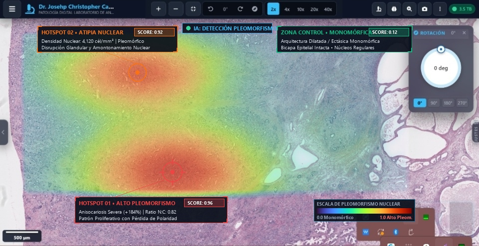
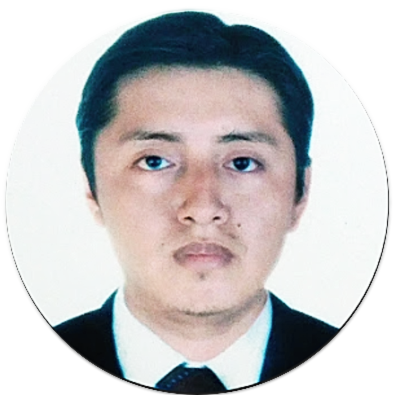

Diagnóstico histopatológico de alta fidelidad, biopsias por congelación, inmunohistoquímica bajo criterios OMS 5ta Edición y digitalización WSI soberana.

Cada espécimen es procesado con técnica histotécnica estandarizada y auditado microscópicamente bajo guías CAP y OMS.
Biopsias prostáticas extendidas (ISUP / Gleason), mapeo de márgenes quirúrgicos, carcinomas uroteliales y patología testicular/renal de alta complejidad.
Paneles exhaustivos diagnósticos y pronósticos (Dabbs): Ki-67, p63, p40, CK7/20, HER2, receptores hormonales, c-Kit y marcadores mesenquimales.
Digitalización de láminas completas (Whole Slide Imaging). El médico tratante puede navegar y hacer zoom a 40x desde cualquier dispositivo sin demoras.
Papanicolaou en base líquida, citología de orina, líquidos serosos y biopsias por aspiración con aguja fina de tiroides y partes blandas (Bethesda System).
Revisión exhaustiva de tacos de parafina y láminas histológicas previas con discrepancia diagnóstica o casos oncológicos limítrofes.
Apenas el patólogo valida y firma el informe en Lima, se transmite en PDF criptográfico al teléfono del cirujano y al sistema clínico.

Especialista en Anatomía Patológica con enfoque en uropatología, patología oncológica, patología digital e innovación en bio-ingeniería diagnóstica. Líder del desarrollo del microscopio digital soberano y la infraestructura clínica de JC PATH LAB.
Tarifas diferenciadas y tiempos garantizados de entrega para clínicas asociadas (Clínica UROSUR, Clínica Carrión, centros urológicos y oncólogos independientes).
Recojo programado de biopsias en formol neutro al 10%, procesamiento en casetes identificados con código unívoco y entrega digital inmediata.
Descargar Tarifario Corporativo 2026 (WhatsApp)